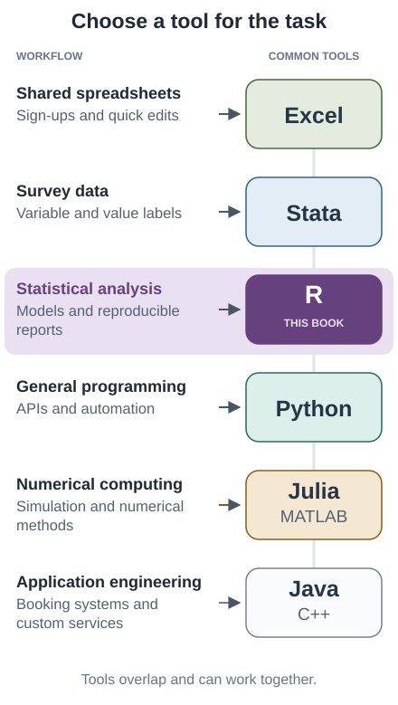
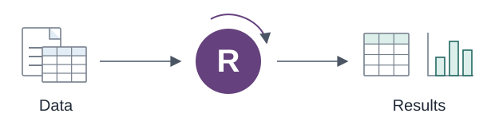
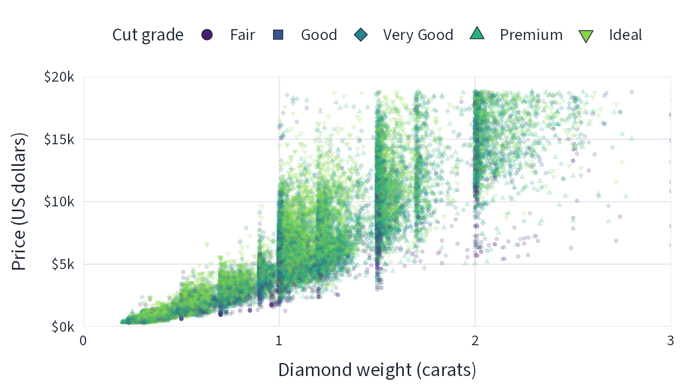
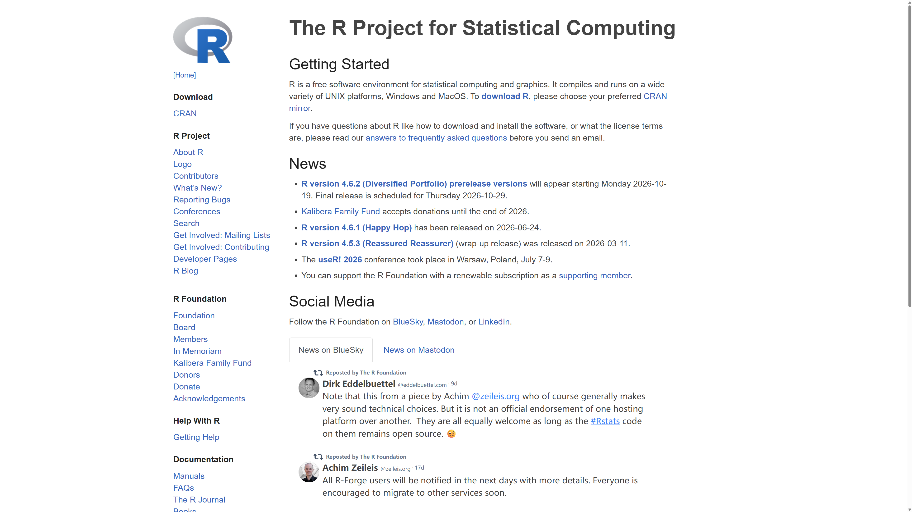
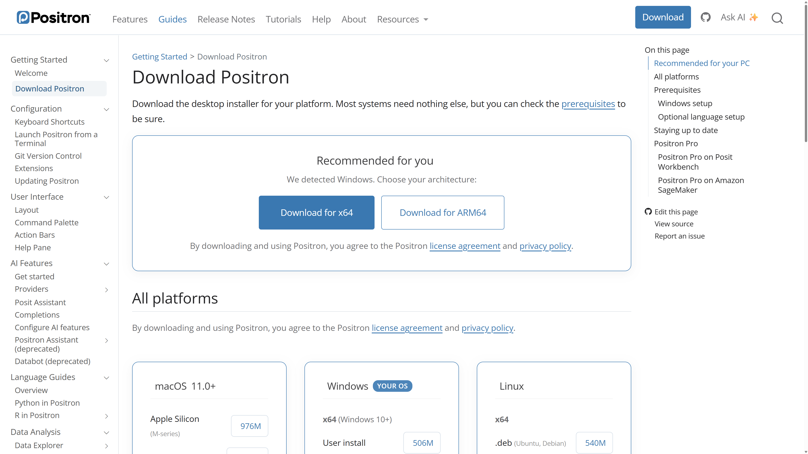

1 + 1[1] 2# Make 24 using 3, 4, 5, and 9
(4 + 9 - 5) * 3[1] 24This pilot introduces the basic ideas behind R and the tidyverse. Some technical explanations and software comparisons are still under review.
R is a programming language designed by statisticians.
Learning a new language takes time. If Stata already handles your data, statistical methods, and outputs well, you may have little immediate reason to learn R. A useful starting question is whether a recurring research task is becoming difficult to express, repeat, or extend in your current software.

Different tools have their own comfortable areas of use. Stata provides a familiar environment for survey analysis and econometrics. Python is widely used for general programming, web applications, and scientific computing; a project built around a framework such as PyTorch may give you a reason to learn Python. These areas overlap. Choose a language with attention to your research question, collaborators, and the tools you need.
For many social scientists, the first reasons to learn R arise before model fitting. You may need to combine survey files with administrative records, read spreadsheets and data from online services, keep several datasets and intermediate results available, or repeat complicated cleaning across many survey waves. R lets you organize these as named objects and reusable functions. Stata also supports multiple datasets through frames; R’s appeal grows when you want to connect data preparation with a wider range of research tools.

Visualization is another common reason. ggplot2 provides a consistent way to build and refine figures, from a quick check of a distribution to a comparison across groups. The tidyverse connects importing, cleaning, reshaping, and plotting data through related conventions. Learning those conventions can make an entire analysis easier to adapt as your question changes.

As research needs expand, R offers packages for text, spatial, and network data, as well as causal inference, machine learning, simulation, and Bayesian analysis. The CRAN Task Views organize packages by these areas. R can also connect analysis to interactive displays and reports. You can add specialized tools as your work requires them; this book begins with the data preparation, description, and visualization skills that support many such applications.
Some extensions require additional infrastructure. For example, Arrow lets R work with multi-file and larger-than-memory datasets, but installing R alone does not remove memory or computing limits. The value of learning R depends on the workflow it makes possible for you. Its free, open-source ecosystem gives you room to extend that workflow as new needs arise.
Install two separate programs: R, which runs your code, and an integrated development environment (IDE), which helps you write code, inspect data, and view results. This book uses Positron as its main IDE.
Start by downloading R from the R website. Follow the CRAN link and choose the installer for your operating system. Install R before opening Positron.

Next, download and install Positron. Choose the installer for your operating system and processor. The website may show a different recommended download on your computer. Positron requires R 4.2 or later; its download page lists any additional system requirements.

Positron includes support for running R code, exploring data, viewing plots, and reading help. Posit recommends it for new R users. We use one main IDE so that beginners can follow a consistent set of instructions. RStudio remains supported and is a useful alternative if your course already uses it. VS Code also supports R, but its setup requires an R extension and the languageserver package. Readers already comfortable with either editor can continue using it for the R examples in this book.

In the layout shown here, the file explorer is on the left, the editor is in the center, and the console is below the editor. The right sidebar contains variables and plots, with tabs for help and other tools. The layout can be customized, so your screen may differ. Open an R script, select an R interpreter if prompted, and use the console to run code. The screenshot is an orientation example from the official documentation; you do not need its example files, packages, or R version.
For now, remember one shortcut: Ctrl + Enter on Windows or Linux, or Cmd + Enter on macOS, runs the selected code in the editor. If no code is selected, Positron runs the current statement.
Once R and your IDE are installed, we can try a little code. R can perform arithmetic directly:
1 + 1[1] 2# Make 24 using 3, 4, 5, and 9
(4 + 9 - 5) * 3[1] 24In R, quotation marks enclose text:
# Use straight single quotes '' or double quotes "" to represent text
"Hello, R!"[1] "Hello, R!"We can also call functions to perform more complex tasks:
# Use sqrt() to calculate a square root
sqrt(25)[1] 5# Use nchar() to count characters
nchar("hello")[1] 5We can store results for later use:
# Assign 123 to a
a <- 123
# Inspect the value of a
a[1] 123# Multiply a by 2
a * 2[1] 246# Assign the result of a * 2 to b
b <- a * 2
# Inspect the value of b
b[1] 246This book mainly uses the tidyverse and tidystata packages. Before continuing, install these two packages:
# Install tidyverse
install.packages("tidyverse")
# Install tidystata from GitHub
install.packages("pak")
pak::pak("socimh/tidystata")AI assistance is optional. You can work through this book without an AI account or coding assistant. Try the examples yourself first. If you get stuck, an assistant can help explain a line of code or suggest a next step. Ask for a hint or an explanation before asking for a complete solution.
For example, you might ask: “Explain what a <- 123 does, then give me a similar question to try without showing the answer.”
When an assistant suggests code:
The aim is to understand enough to explain and check your own work. Keep examples small while you are learning. Optional editor setup is described in the Positron completions guide and the RStudio Copilot guide.